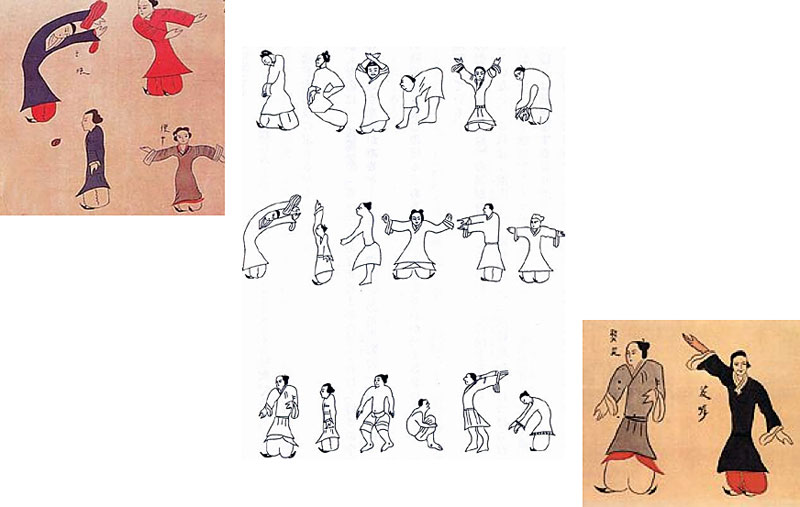
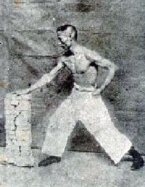
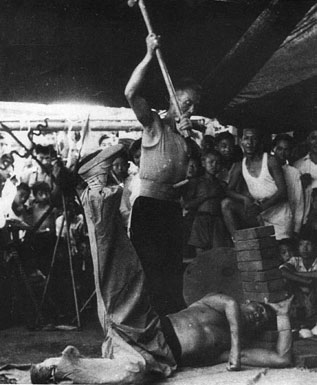
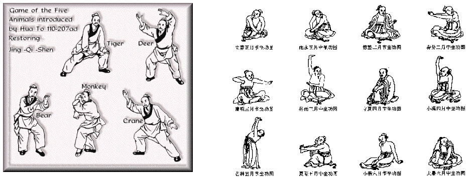

Qigong History
2800 BCE to 200 BCE
- Mostly Qigong for health
- Many written references
- Little record of actual practices
- Daoist & Confucian
- Keep selves healthy
- Medical
- Keep others healthy
Mawangdui
Characteristics
- During this time period, the exercises were simple
- Chinese medical theory was not as well developed
- There were little or no spiritual aspects to the practice of Qigong
200 BCE to 500 CE
- Buddhism from India spread through China
- Pranayama
- Spiritual Qigong developed
- The Path to Enlightenment
- Methods were kept secret
- Tibetan Buddhism
- Daoist Qigong evolved
Hua To
- Famous physician
- Wu Qin Xi (5 animal frolics)
Characteristics
- Qigong became more complex
- Chinese medical theory and qi circulation were better understood
- Therefore, the sets were more efficient than older sets
- Spiritual Qigong was not taught to laymen
500 CE to 1911 CE
- Martial Qigong developed
- Damo came from India and traveled to the Shaolin Temple
- Yi Jin Jing (Muscle / Tendon Changing Classic)
- Xi Sui Jing (Brain / Marrow Cleansing Classic)
- Monks found these exercises increased their strength
Martial Qigong
- 5 animal styles
- Tiger, Leopard, Dragon, Snake, Crane
- Waigong (external styles)
Neigong (Internal Styles)
- Hard styles
- Use Qigong to cultivate strength
- Use one’s own power to overcome others
- Hung Ga
- Soft styles
- Use Qigong to cultivate a strong, relaxed structure
- Iron wrapped in cotton
- Use softness to overcome opponent’s force
- T'ai Chi
Chinese Medical Theory
- Chinese Medical theory matured and reached an apex
- Added to the complexity and efficacy of Qigong
- affected all 3 branches
- Spiritual, Martial, and Medical
Waiqi
- External Qigong healing
- Practitioner uses own qi to affect the qi of another for health benefits
- Based on Chinese Medical theory
- No touching is involved
Characteristics
- Qigong became intertwined with martial arts, giving rise to martial qigong
- Chinese medical theory peaked, and medical qigong became more widespread
- Spiritual Qigong was still being kept secret
- Qigong was generally becoming more popular
1911 CE to Present
- Founding of the Chinese Republic
- Later, the People's Republic of China
- Qigong has become more popular and widespread
- Mass communication
- Old texts made available to public, secrets revealed
- Exchange of ideas with India, Japan, Korea
- Modern scientific research
Mawangdui Illustration
Martial Qigong (Yi Jin Jing)
Martial Qigong (Xi Sui Jing)
5 Animal Styles